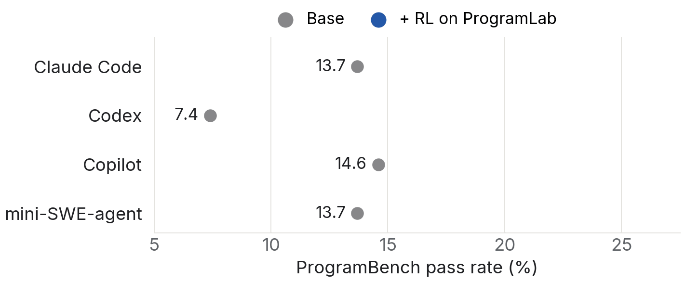
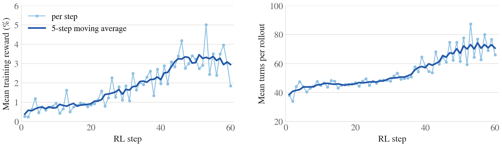
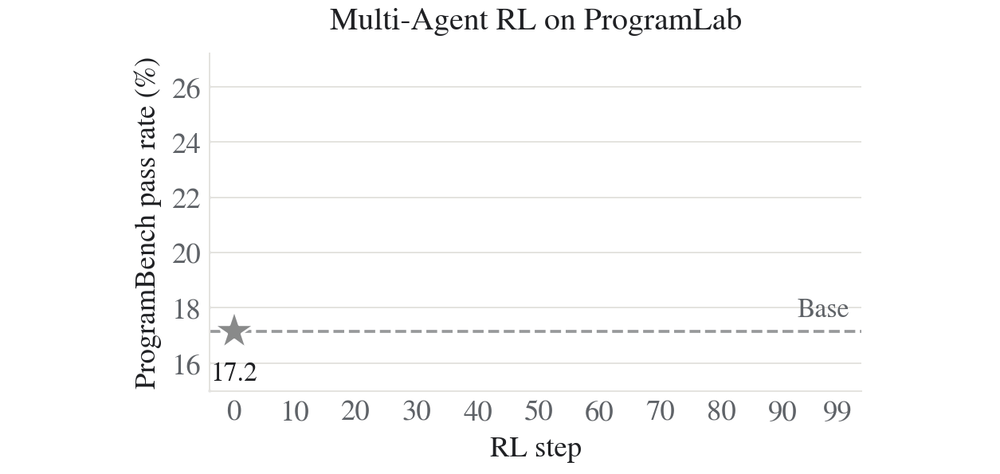

Train single and multi agents to rebuild programs with RL
Give an agent a real program to play with, hide the code, and ask it to rebuild the whole thing. Even top agents struggle on this.
ProgramLab gives agents 1,262 such programs to practice on. Environments are available here.
Train one agent, or a whole team
Using Qwen3.6-35B-A3B, we run RL on ProgramLab and evaluate on ProgramBench:
- Single agent: 13.7% → 24.0% in Claude Code under a two-hour budget.
- A 5-Agent team: 17.2% → 25.0% in under a 30-minute budget.
Long-horizon agentic RL improves across harnesses. Trained in GitHub Copilot CLI, the policy improves ProgramBench in all harnesses we test, including three unseen during training: Claude Code (+10.3), Codex CLI (+8.3), and mini-SWE-agent (+4.1). Under an extended six-hour budget, Claude Code goes from 19.0 to 27.6.

Agent learns to write compilable programs during RL. During RL training with 1024 rollouts per step(64 task * 16 rollout), rollouts grow from about 43 to 72 turns while mean training reward rises with 8× more rollouts ending with a compiling program (3.4% → 27.9%), under 2-hour rollout and 128k context budget.

Multi-agent RL also works. RL on ProgramLab raises a five-agent Qwen3.6-35B-A3B team from 17.2% to 25.0% (+7.9 points) on ProgramBench under a 30-minute budget.

Data recipe
What's in ProgramLab? ProgramLab contains 1,262 tasks from 1,262 distinct public repositories (566 Go, 416 Rust, 280 C/C++), with 187,208 hidden behavioral tests in total. The reference programs are substantial: the median project has an estimated 11.5K lines of source code, and about 150 exceed 100K lines. Each task contains:
- A reference executable, built from a pinned commit and shipped execute-only.
- Documentation: usage text, help output, man pages, and any fixtures the agent cannot create itself.
- A hidden test suite: a median of 127 tests that run the agent's program and compare its observable behavior with the reference.
- The result is a small but thorough suite: a median of 127 tests (ProgramBench has 770) covers 76.6% of the reference's first-party lines, achieving over 90% for projects under 5K lines.
- Provenance: the source repository and commit the executable was built from.
Tasks ship in the ProgramBench format, so the official ProgramBench evaluator scores them without modification. Following ProgramBench's difficulty score, 205 tasks are easy, 889 medium, and 168 hard.
 FiloSottile/mkcertEasy · Go · ~1.4K lines · 121 tests · 91.9% line coverage
PaulJuliusMartinez/jlessMedium · Rust · ~11K lines · 106 tests · 77.8% line coverage
caddyserver/caddyHard · Go · ~99K lines · 262 tests · 41.3% line coverage
FiloSottile/mkcertEasy · Go · ~1.4K lines · 121 tests · 91.9% line coverage
PaulJuliusMartinez/jlessMedium · Rust · ~11K lines · 106 tests · 77.8% line coverage
caddyserver/caddyHard · Go · ~99K lines · 262 tests · 41.3% line coverage
Why ProgramLab is suitable for RL
- Graded. The reward is the fraction of tests passed, so a partially working program earns partial credit. In our single-agent run, 95% of training tasks gave a nonzero reward at least once, so nearly every task provides learning signal from the start.
- Validated. We drop tests that the reference fails in the cleanroom (4,047), that a no-op binary passes (1,738), or that are flaky (550). Every released task scores 1 with the reference and 0 with an empty submission.
- Prevent hacking
- Fast to score. Because the coverage-guided loop adds a test only when it reaches new code, suites stay small and every rollout is cheap to score.
How we build ProgramLab. We collect and filter open programmable projects from package registries (Homebrew, crates.io, pkg.go.dev) and GitHub which reliably produce a standalone executable. For each task, we use Codex CLI with GPT-5.5 to construct the environment following three steps below, each checked by an independent validator that does not trust the agent's own report:
- Build the reference. Compile the project's main executable and record the build script.
- Synthesize behavioral tests. Probe the executable and write tests that assert on its observable effects. A test is kept only if it passes on the reference, passes on repeated runs, and fails on a dummy binary that accepts any input. We design a coverage-guided iteration to produce high-quality and compact test suites that are suitable for RL.
- Package the cleanroom. Ship an execute-only binary and its documentation; remove source, build caches, and version-control history.
Agentic RL in ProgramLab
In each task, the agent works in a cleanroom container with a build toolchain and no network access. It can run the reference executable and read its documentation (usage text, help output, man pages), but it cannot read the source. It writes code in any language, plus a compile.sh that builds a candidate executable. ProgramBench (Yang et al., 2026) makes this challenge concrete.
For scoring, the candidate is rebuilt in a fresh container and run against a hidden test suite. The reward is the fraction of tests passed, r = |Tpass| / |T| ∈ [0, 1].
Trajectory collection for black-box harnesses. We run off-the-shelf harnesses as the policy's interface.
- Recording proxy. The cleanroom allows only loopback networking, so every model call, from every agent, goes through a proxy that logs prompt tokens, sampled tokens, and log-probabilities. Calls are merged into training sequences by prefix matching, and only sampled tokens are trained.
- Context compaction. When the harness summarizes its history, a new training segment starts. The summarization call is trained too.
- Asynchronous training. Generation and training overlap, with a cap on how stale samples can be.
Multi-agent training. We train Qwen3.6-35B-A3B using an experimental variant of the Agensh harness with five agents: one leader designs test cases and delegates implementation tasks to four workers. Each rollout is executed in an isolated Docker environment, with Gitea serving as a shared coding workspace, Mattermost facilitating communication, and shared context synchronizing findings across agents. All five agents share the same Qwen3.6-35B-A3B model weights, which are optimized using a two-stage curriculum consisting of 50 training steps on easy tasks followed by 50 steps on medium tasks. Each rollout has a 30-minute execution budget, after which the Gitea repository is exported for reward calculation with ProgramLab.
| Single agent | Multi agents | |
|---|---|---|
| Model | Qwen3.6-35B-A3B | Qwen3.6-35B-A3B |
| Training harness | GitHub Copilot CLI | Agensh with 5 agents running GitHub Copilot CLI |
| Rollouts per task | 16 | 4 |
| Training budget per rollout | 2 hours, 128K context | 30 minutes, 256K context |
Related work
- Building programs from scratch: ProgramBench, Commit0, NL2Repo-Bench, RepoZero, Zero2Repo.
- Training environments for coding agents: SWE-Gym, R2E-Gym, SWE-smith, MindForge, CUA-Gym.
- Agentic RL: SkyRL-Agent, LLM-in-Sandbox, AReaL, ReSum, SUPO, Agent Lightning.
- Multi-agent harnesses and RL: Agensh.
Next
- Nov. 10–Nov. 17: Open-source training infra, RLBridge.
BibTeX
@misc{programlab2026,
title={ProgramLab: Train single and multi agents to rebuild programs},
author={Yao Tang and Daixuan Cheng and Li Dong and Zhihao Zhan and Shaohan Huang and Jiatao Gu and Furu Wei},
howpublished={Blog Post},
url={https://programlab.blog/},
year={2026}
}